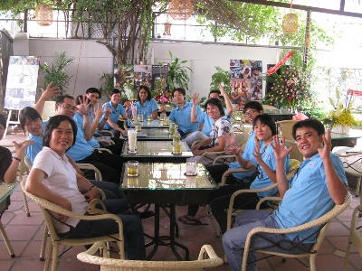

Giao diện chuẩn (Phím tắt alt+0)
Tương phản cao (Phím tắt alt+0)
Chế độ ban đêm (Phím tắt alt+0)
Tăng kích cỡ chữ (Phím tắt alt+w) Đặt lại cỡ chữ chuẩn (Phím tắt alt+r) Giảm kích cỡ chữ (Phím tắt alt+e)
Danh sách ủng hộ (Phím tắt alt+q)
Tiếng Việt (Phím tắt alt+1) English (Phím tắt alt+1)
Bạn đang ở: Hội quán » Giới thiệu
Nội dung ( Phím tắt 9 )
1. Mong muốn nhất khi thành lập hội quán là gì?

Hội quán DRD – Đời Rất Đẹp là ý tưởng của người sáng lập DRD- Chương trình Khuyết tật và Phát triển (Disability Resource and Development) và được sự đồng tình ủng hộ của tất cả các thành viên của DRD và bạn bè thân hữu. Đời Rất Đẹp nhằm tạo một sân chơi cho NKT, một nơi NKT có thể gặp gỡ, trao đổi, tham gia sinh hoạt với những người bạn không khuyết tật trên cơ sở bình đằng về cơ hội và cùng giúp nhau phát triển. Bao năm qua chúng ta vẫn kêu gọi NKT hòa nhập XH, khuyến khích và khích lệ các thành viên khác trong XH tạo điều kiện để NKT hòa nhập. Nhưng hòa nhập thế nào được khi mà môi trường sinh hoạt còn đầy rào cản, các nơi sinh hoạt vẫn không thể nào tiếp cận được, khi vẫn còn nhiều người nhìn NKT với ánh mặt tội nghiệp hay không thoải mái với cảm giác bị làm phiền khi NKT cần giúp đỡ.
Khi NKT đến hội quán họ sẽ cảm nhận được đây là “nơi của họ”, một nơi để họ cảm thấy rằng mình không hề đơn độc, một nơi họ có thể thể hiện khả năng/ tài năng của mình, một nơi họ có thể chia sẻ những khát khao về cuộc sống.Người không khuyết tật đến với hội quán để thấy rằng NKT không hề thiếu khả năng, không phải chỉ là gánh nặng cho gia đình hay xã hội mà họ vẫn có thể vui sống, làm việc, và cống hiến nếu họ có được cơ hội.
Khi đến với hội quán, tham gia các sinh hoạt, thật sự chia sẻ và thật sự lắng nghe - nghĩa là thật sự mở rộng trái tim để có thể đến được với nhau - ta sẽ cảm nhận được rằng Đời Rất Đẹp chứ không không phải “Đời sao mà chán quá!” như ta vẫn thường nghĩ khi cảm thấy cô đơn, hay trong khi tuyệt vọng.
2. Hội quán sẽ hướng vào những hoạt động chính nào và sẽ có những hoạt động gì để quảng bá cho mọi người biết nhiều hơn? Thời gian sinh hoạt của Hội quán sẽ diễn ra như thế nào?

Với mục tiêu “kết nối những trái tim” để tạo một sân chơi tích cực giúp thay đổi những cuộc đời, Đời Rất Đẹp thực sự là một trung tâm công tác xã hội với các hoạt động nhắm đến mục tiêu đó.
Hđ 1: l à nơi để các em chậm phát triển có nơi để tiếp tục sinh hoạt và phát triển vì chậm phát triển nghĩa là phát triển chậm hơn người khác chứ không có nghĩa là các em không tiếp tục phát triển. Nhưng thường thì đến một độ tuổi nào đó thì các em không còn được đến trường nữa – nơi duy nhất mà các em vẫn được học tập và sinh hoạt - và như thế sự phát triển của các em sẽ bị dừng lại hoặc thục lùi khi không còn có cơ hội để tiếp tục trao dồi.
Hđ 2: khi tham gia sinh hoạt với các em khiếm thính chúng tôi mới biết rằng các em là nhóm khó tìm được việc làm nhất vì rào cản của các em là không thể giao tiếp bằng ngôn ngữ bằng lời thông thường. Nhìn các em ta thấy xót xa. Các em đẹp đẽ, thông minh, chịu khó,… nhưng hầu như chỉ gói gọn sinh hoạt của mình trong cộng đồng người khiếm thính. Vì vậy chúng tôi muốn giúp các em học pha chế và phục vụ bàn. Đời Rất Đẹp sẽ là nơi để các em học tốt nghề rồi đào tạo giúp lại những em khác. Chúng tôi hy vọng rằng mọi người đến với hội quán sẽ chịu khó trao đổi với các em, nhìn thấy các em làm việc, góp ý thêm cho các em, và giới thiệu các em đến với mọi người để mở rộng thêm cơ hội việc làm cho các em ở những nơi khác. Khi giới thiệu được một nhóm đi làm ở những nơi khác, chúng tôi lại nhận thêm những em mới để đào tạo, và cứ tiếp tục như thế.
Dĩ nhiên là ngoài việc học nghề, các em còn được tham gia những sinh hoạt khác ở DRD để phát triển thêm những kỹ năng xã hội cần thiết.
Hđ 3: hội quán còn là nơi giúp trưng bày và giới thiệu sản phẩm của NKT. Đời Rất Đẹp chỉ nhận trưng bày và giới thiệu những sản phẩm thực sự chất lượng vì chúng tôi không muốn các bạn KT chỉ làm và bán sản phẩm với suy nghĩ rằng người khác mua giúp mình vì mình là NKT. Những sản phẩm mua vì lòng từ thiện như thế chỉ có thể bán được 1 lần, và giá trị của NKT sẽ vẫn tiếp tục ở vị trị thấp trong lòng người mua giúp. DRD muốn rằng người quan tâm sẽ công nhận vẻ đẹp và chất lượng của các sản phẩm trưng bày ở hội quán, mua chúng vì thích và muốn sử dụng, và có thể tự tin giới thiệu chúng đến với mọi người. Những NKT hoặc tổ chức NKT nào có đủ sản phẩm để trưng bày riêng, thì DRD cũng có thể cho mượn mặt bằng để trưng bày trong 1 tháng.
Hđ 4: Âm nhạc vẫn luôn là sợi dây kết nối trái tim nhanh nhất. Vì vậy Đời Rất Đẹp được xây dựng như một sân chơi để những bạn KT có khả năng âm nhạc biểu diễn và giao lưu với mọi người. Chúng tôi hy vọng rằng sân chơi này sẽ giúp DRD phát hiện thêm những tài năng còn ẩn dấu trong cộng đồng NKT. Chúng tôi có những đêm thứ Năm và thứ Sáu hát với nhau, những đêm giao lưu với các anh chị văn nghệ sĩ, và thỉnh thoảng sẽ có những đêm với chương trình được dàn dựng công phu hơn.
Hđ 5: Với mong muốn tạo một sân chơi tích cực, DRD đã và vẫn đang tìm kiếm những cơ hội mời được các chuyên gia công tác XH, tâm lý, giáo dục, phát triển cộng đồng,… giành chút thời gian đến chia sẻ với các em sinh viên và những người quan tâm. Dĩ nhiên là hoàn toàn miễn phí vì DRD không có ngân sách cho hoạt động này. Hiện giờ thì mục tiêu này đã được gửi đi và nhận được sự quan tâm và ủng hộ của rất nhiều bạn bè trên thế giới. Hy vọng là những buổi chuyên đề này sẽ được tổ chức thường xuyên hơn để giúp cho các em sinh viên, những người hoạt động chuyên môn có cơ hội tăng thêm kiến thức liên quan đến việc học tập và công tác của mình.
Sinh viên các ngành khoa học xã hội cũng có thể xây dưng những buổi sinh hoạt chuyên đề của mình ở hội quán. Nếu các em có ý tưởng và muốn thực hiện, DRD sẽ cố gắng - trong khả năng của mình - giúp các em lên chương trình và tổ chức thực hiện. Sân chơi này cũng giành cho cả những bậc cha mẹ, các giáo viên, hoặc nhân viên xã hội. Từ những hoạt động chuyên đề này, những nhóm đồng cảnh (những người đang gặp khủng hoảng vì các nguyên nhân khác nhau) có thể dần được hình thành và hỗ trợ nhau vượt qua khó khăn.
Hđ 6: DRD cũng tìm cách tăng cường mối liên kết với các tổ chức khác để thực hiện thường xuyên hơn những buổi hội thảo tại hội quán.
Tất cả những buổi sinh hoạt chuyên đề, những chương trình đặc biệt sẽ được thông báo trên trang web của DRD, cũng như được gửi cho những người đã đăng ký vào mailing list của DRD. DRD cũng hy vọng rằng các báo, đài giúp chúng tôi chuyển thông tin đến với những người quan tâm.
3. Những khó khăn của hội quán?
Ý tưởng đẹp (như mọi người vẫn nói) nên cần một mặt bằng phù hợp. Mà mặt bằng phù hợp cũng có nghĩa là ngân sách phù hợp. Đây là điều làm chúng tôi lo lắng nhất. Một hội quán xã hội thì không thể thuần kinh doanh, vì vậy để có được thu nhập từ kinh doanh mà không hy sinh đi mục đích xã hội ban đầu là một điều cực kỳ khó khăn. Chúng tôi vẫn đang tìm thêm ý tưởng để duy trì hoạt động của hội quán.
Khó khăn nữa là tìm được những tình nguyên viên có chuyên môn liên quan để giúp chúng tôi thực hiện được ý tưởng của mình. Một vài thí dụ,
- Với các em chậm phát triển chúng tôi muốn tìm những chuyên gia về nghệ thuật trị liệu (art-therapy) để giúp phát triển những chương trình sinh hoạt cho các em, nhưng ở VN ta hầu như không dễ tìm được những tình nguyện viên như thế
- Với những buổi chuyên đề mời được chuyên gia nước ngoài, chúng tôi cũng cần những tình nguyện viên giúp cho phần phiên dịch. Nhưng tìm được người dịch chuyên nghiệp miễn phí thì không dễ chút nào, còn những người dịch không chuyên thường không chuyển được hết ý của diễn giả, mà như thế thì thật tiếc cho những người đang muốn học.
4. Hội quán đã được những tấm lòng hảo tâm trợ giúp ra sao?
Khó khăn như thế, nhưng điều làm chúng tôi vui và tin tưởng hơn vào con đường mình đã chọn là đã có nhiều người đóng góp ít nhiều khi nghe chúng tôi chia sẻ ý tưởng “liều lĩnh” của mình và những khó khăn đang đối mặt. Họ là những người đến từ các tổ chức xã hội, các cá nhân, và cả những văn nghệ sĩ, những nhà báo. Mọi người bày tỏ niềm yêu thích của họ với ý tưởng Đời rất Đẹp, và hứa sẽ giới thiệu DRD đến với bạn bè và người thân của mình. Nhờ thế mà niềm vui được nhân lên, và nỗi lo được chia ra, và cũng chính vì thế mà Đời rất Đẹp!
5. Các nhóm kết nối tại hội quán
| Tên Nhóm | Mục tiêu | Tin hoạt động |
| CLB Phụ Nữ Khuyết tật | Với mục tiêu Thúc đầy bình đẳng cơ hội cho Phụ Nữ Khuyết Tật ( PNKT) trên địa bàn TP.HCM, vào năm 2009 Câu lạc bộ Phụ Nữ Khuyết Tật (CLB PNKT) được thành lập. Đến năm 2013 CLB PNKT thu hút 50 PNKT tham gia sinh hoạt định kỳ hàng tháng với nhiều hoạt động do CLB tổ chức như: tập huấn kỹ năng, sinh hoạt chuyên đề, học nữ công gia chánh, hỗ trợ thành viên kinh doanh nhỏ...nhằm giúp PNKT nâng cao năng lực, tự tin hòa nhập cộng đồng | Xem chi tiết |
| CLB Nhiếp Ảnh Đời Rất Đẹp | - Là những người bạn cùng có đam mê đặc biệt với bộ môn nghệ thuật Nhiếp ảnh, và cùng thích giao lưu, chia sẻ, học hỏi kinh nghiệm. - Là những người quan tâm nhiều đến vấn đề Khuyết tật tại Việt Nam và đều có mong muốn góp phần nhỏ vào việc đưa hình ảnh Người khuyết tật giàu nghị lực, biết vươn lên vượt qua mọi khó khăn và hòa nhập với cộng đồng. |
Xem chi tiết |
| CLB Học qua Phim | Tạo thêm sân chơi lành mạnh cho mọi đối tượng yêu thích môn Nghệ thuật thứ 7. Ngoài việc xem những bộ phim chứa đựng ý nghĩa sâu sắc, khán giả sẽ có dịp thảo luận về nội dung phim cùng với những huấn luyện viên giá trị sống nhiều năm kinh nghiệm để có cái nhìn đa chiều hơn về các bộ phim | Xem chi tiết |
| Lớp My Future | Đang cập nhật | Xem chi tiết |